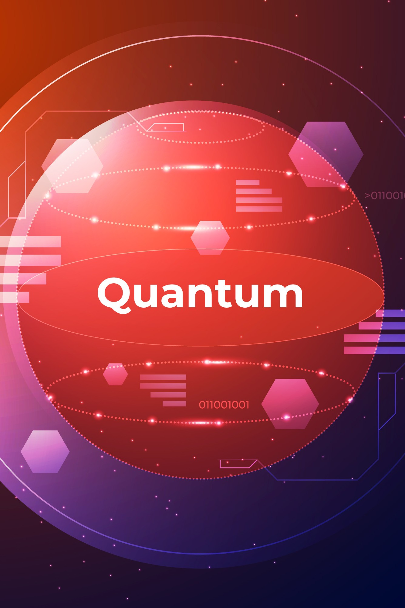
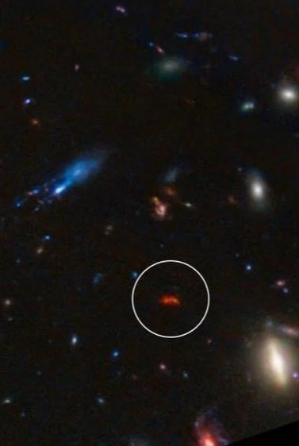

Validation for a unification framework differs from validating a narrow prediction. When multiple independent phenomena, specifically dark energy evolution, quantum error correction, early galaxy formation, and intracluster thermodynamics, all converge on the same foundational substrate, we are seeing bidirectional evidence: not just theory predicting observation, but independent observations pointing back to the same theory.
This is the threshold that distinguished Einstein's relativity from alternatives. Mercury's orbit, gravitational lensing, time dilation, and gravitational waves each independently required curved spacetime. The COSMIC Framework is approaching that same convergence threshold across four independent domains. The goal is 5‑sigma. Every result, pass or fail, moves the needle.
How This Works
The Ic² Research Institute develops theoretical predictions and documents them before results arrive. The experimental validation is carried out by independent programs representing billions in publicly funded scientific infrastructure: DESI, Google Quantum AI, JWST, and multiple independent surveys. These programs have no stake in the framework's success. Their confirmation is independent by design. Einstein did not build the instruments that confirmed general relativity. Theoretical physics and experimental physics are different disciplines, and the division of labor is a feature, not a gap.
View Structured Result Records →



Each bar shows the gap between documentation date and independent experimental confirmation.
Documentation dates are independently timestamped. Confirmation dates are from published results by DESI, Google Quantum AI, and JWST.
Four pre-registered predictions at the quark scale. External validation by LHCb, Belle II, RHIC, lattice QCD, and the planned Electron-Ion Collider.
COSMIC-SD-001 • LHCb / ATLAS / CMS
Landauer Heat Signature at QCD Scale
CP-violating processes should produce measurable heat excess above momentum transfer predictions, proportional to information erased in the irreversible gate operation.
COSMIC-SD-002 • LHCb / Belle II
CKM Angles as Information-Theoretic Optima
The three CKM mixing angles and CP-violating phase minimize an information-theoretic cost function at the substrate level — set by optimization, not arbitrary initial conditions.
COSMIC-SD-003 • Lattice QCD / EIC
Confinement Boundary Entanglement Scaling
Entanglement entropy at the QCD confinement boundary scales with the framework's information-density parameter — connecting quark-scale structure to cosmological predictions through the same mechanism.
COSMIC-SD-004 • RHIC / LHC Heavy-Ion
QCD Phase Transition Information Signature
The quark-hadron crossover produces a specific entanglement entropy drop reflecting constraint imposition — the Bamboo Principle operating at the quark scale. Distinguishable from standard thermal predictions.
Each SD prediction is falsifiable independently. A confirmed null result still advances the framework by establishing where in the physical hierarchy information processing transitions from reversible to irreversible — which is itself a significant finding. Pre-registration on Zenodo and OSF before any data collection begins.

Each prediction the COSMIC Framework makes is a formal test event. When results come in, they feed directly back into the framework: confirmations raise the sigma indicator, partial matches trigger parameter refinements, and falsifications trigger public revisions before the next test cycle begins. Five-sigma confidence is not claimed in advance. It is earned incrementally, through honest accounting of every result. Click either card to expand.

"Every result, pass or fail, improves the model."
Science does not advance by being right. It advances by being wrong in useful ways.
Consider driving down a country road toward a destination you have only a rough idea of how to reach. You expect to go straight. Then a road sign tells you to turn left. You do not ignore it because it contradicts your plan. You update your mental map, recalibrate, and continue with better information than you started with.
A few miles on, you reach a fork. You turn left again, confident in your revised route. The road is closed. So you turn around, and as you do, you carry something your original self did not have: the knowledge that roads can be blocked, that confidence is not the same as correctness, and that the most direct-looking path is not always the one that takes you where you need to go.
This is not a story about failure. It is a story about how prediction accuracy compounds. Each falsified expectation narrows the space of possibilities, eliminates wrong turns before they become dead ends, and sharpens the predictions that remain. A framework that cannot be falsified is not strong. It is merely unfalsifiable, which is a different thing entirely, and a much weaker one.
This is why the COSMIC Framework does not treat falsification as a threat. It treats it as the mechanism by which confidence is earned. A confirmed prediction raises the sigma indicator. A partial match triggers a letter revision, narrowing a parameter range. A falsified prediction triggers a numbered edition revision: the failing postulate is identified, its direction of error diagnosed, and a corrected version is published before the next test cycle begins. No result is wasted. No failure is hidden. Five-sigma significance is not a destination you arrive at by being cautious. It is where you end up after following every sign, taking every turn, and being honest about every road that was closed.

"You could start at any element and arrive at the same conclusion."
When independent phenomena (from cosmology to quantum mechanics to thermodynamics) all point to the same foundational substrate, something important is happening. This is bidirectional convergence: not just theory predicting observation, but independent observations from entirely unrelated domains all pointing back to the same theoretical foundation. General relativity earned its standing through exactly this pattern. Mercury's anomalous orbit, the bending of starlight around the Sun, the slowing of clocks in gravitational fields, and the ripples detected by LIGO a century later each independently demanded curved spacetime as its explanation. No single one was conclusive. Together, they were irrefutable.
The COSMIC Framework is tracing the same arc. Dark energy evolution (cosmology), quantum error correction scaling (quantum computing), early massive galaxy formation (astrophysics), and hot intracluster gas thermodynamics (thermodynamics): four phenomena from four independent domains, all requiring the same information processing substrate. Each arrived at that substrate independently. Meeting this convergence threshold demonstrates that the core insight, information as substrate, has genuine explanatory power across independent domains. It does not mean the framework is final, proven, or immune to revision. Science seeks better understanding, not ultimate truth. A framework at this threshold is worthy of rigorous testing and systematic challenge. This is how physics works at its best: multiple independent witnesses to the same underlying truth.
How each test result moves the sigma indicator
Prediction matches observation within the stated confidence interval. No revision to the framework is required. The test event is logged as a validation pass and enters the cumulative significance calculation.
Observation confirms the core claim but at different parameter values than predicted. A letter revision (e.g. 5A) refines the predicted range with no change to postulates or edition number. Logged as a partial validation pass.
Observation does not match the prediction. A numbered edition revision is triggered. The failing postulate is identified, revised, and published. A failed validation gate initiates formal corrective action that ultimately improves accuracy on the next test cycle.
Every result, confirmation or falsification, is fuel. Because the COSMIC Framework rests on established physics, a failed prediction is a precise diagnostic: it locates which postulate to revise and exactly which direction to correct it. The path to 5‑sigma runs through iteration, not luck.
Next tests: click any card to expand prediction & all three traffic light outcomes
 Cosmology · Expected Q2–Q3 2026
Cosmology · Expected Q2–Q3 2026Year 3 extends and deepens the signal. ΛCDM ruled out. Core information gradient postulate solidified on the largest dark energy dataset ever assembled.
 +0.4σ · No revision
+0.4σ · No revisionSignal persists but parameter values shift. w₀/wₐ range tightened. Letter revision 5A or 5B updates the predicted range with no structural change to postulates.
 Neutral · Letter revision
Neutral · Letter revisionYear 3 reverts to w = −1. Scale-transition postulate must be revised to introduce a minimum redshift threshold for information gradient effects.
Edition 6 triggeredLesson: Introduce z_min into PEG field equations.
 Cognitive Science · Target Q3 2026
Cognitive Science · Target Q3 2026Transfer-rate advantage detected. Bridges cosmological and biological domains under one principle. Phase 2 opens immediately. Framework's cross-scale claim substantially strengthened.
+0.3–0.5σAdvantage found for some task modalities but not others. Letter revision narrows encoding prediction to specific sensory modalities. Phase 2 redesigned to target those pathways.
Neutral · Scope refinedNo measurable advantage. Cognitive postulates are analogical, not mechanistic at the peripheral encoding level. Cosmological and quantum predictions entirely unaffected.
Edition 6 triggeredLesson: Restrict quantitative predictions to neural-electrical substrate measurements.
Cosmology · Expected 2026–2027Predicted signatures detected at specified angular scale. Information processing geometry of the early universe is imprinted in the oldest observable light, one of the strongest possible validations.
+0.5–0.7σ · Major eventPattern detected at different angular scale than predicted. Boundary geometry model requires a corrected scale factor. Letter revision updates the angular prediction formula only.
+0.1σ · Scale factor refinedNo predicted patterns found. Information substrate is isotropic at the CMB epoch in ways Edition 5 does not accommodate. Dark energy and quantum predictions fully decoupled and unaffected.
Edition 6 triggeredLesson: Introduce a phase-transition redshift above which information geometry is isotropic.
Biophysics · Pre-registration Q2 2026Landauer heat signatures detected. First quantitative confirmation that biological information processing obeys the same entropy-information relation as physical systems. Opens a new research field.
+0.4–0.6σ · Cross-domainHeat signature detected below predicted magnitude. Cellular dissipation too spatially diffuse. Letter revision narrows prediction to high-density neural tissue during sleep specifically.
Neutral · Tissue scope refinedNo detectable signal. Biological Landauer principle does not apply at cellular metabolic scale. Cosmological and quantum predictions entirely unaffected.
Edition 6 triggeredLesson: Restrict to synchronous, high-density neural firing events where heat aggregation is geometrically favorable.
Particle Physics · Pre-registration required firstHeat excess confirmed. First direct evidence that quark-scale gate operations are information processing in the Landauer sense. Substrate dynamics confirmed at the most fundamental accessible scale.
+0.5–0.7σ · Major eventPartial signal detected below predicted magnitude. Landauer cost present but quark-scale measurement precision requires refinement. Pre-registration updated with narrower prediction range.
Neutral · Magnitude refinedNo Landauer excess. Quark-scale gate operations are reversible unitary transformations. Establishes that Landauer irreversibility begins above the quark scale. Significant finding in its own right.
Constraining · Boundary locatedLesson: Information processing irreversibility begins above QCD scale. Revise framework scale claims accordingly.
Flavor Physics · Theoretical derivation required firstDerived cost function minimum matches PDG precision CKM values. Substrate optimization predicts Standard Model free parameters. One of the most ambitious confirmations in theoretical physics.
+0.6–0.8σ · LandmarkPredicted ratios approximately match but not within PDG precision. Cost function structure correct, specific minimum requires refinement of substrate mechanism parameters.
+0.2σ · Parameters refinedNo information-theoretic structure in CKM angles. Substrate optimization does not extend to flavor gate parameters. Constrains universality claim to cosmological and above-hadronic scales.
Constraining · Scope definedLesson: CKM angles set by early-universe symmetry breaking, not ongoing optimization. Revise universality claims to specify scale range.
QCD · Lattice QCD near-term · EIC 2030sScaling relationship confirmed. The pre-geometric substrate mechanism operates continuously from quark to cosmological scales. The same information-density parameter governs both. Most powerful cross-scale validation possible.
+0.7–0.9σ · Cross-scale unificationScaling structure confirmed but with a different functional form. Mechanism operates at both scales but requires a bridging parameter between QCD and cosmological regimes.
+0.3σ · Bridge parameter addedNo relationship to cosmological parameter. QCD entanglement and cosmological information density are governed by different mechanisms. Framework requires separate QCD-scale mechanism.
Edition 6 triggeredLesson: Add QCD-specific information-density parameter distinct from cosmological A(z).
Heavy-Ion Physics · RHIC / ALICE · Existing dataEntropy discontinuity confirmed above thermal QCD predictions. Bamboo Principle operates at the quark scale. The same threshold-crossing mechanism governs from quarks to cosmic phase transitions.
+0.4–0.6σ · Scale-invariantDiscontinuity present but with different magnitude. Bamboo Principle operates at QCD scale but with a modified threshold parameter specific to the QCD transition energy.
+0.2σ · Threshold parameter refinedEntropy change fully explained by thermal QCD. Bamboo Principle does not operate at the QCD scale. Constrains the Bamboo Principle to above-hadronic scales of organization.
Constraining · Scale floor locatedLesson: Bamboo Principle begins above QCD transition scale. Revise to specify minimum organizational depth for threshold dynamics.

All predictions documented before experimental testing. View the full testing schedule →
Experimental confirmations with documented scientific priority
Predicted dark energy evolves with w₀ ≈ −0.95 and wₐ ≈ −0.3 over cosmic time
Predicted: Jan 29, 2024 (Notarized US & Thailand) · Validated: Jan 7, 2025 · Strengthened: Mar 2025 (4.2σ)
Predicted exponential error reduction with increasing qubit count via information optimization principles
Predicted: Aug 12, 2024 · Validated: Dec 9, 2024 (below-threshold achieved)
Predicted 100+ massive galaxies at z = 10–15, 4–5× more massive than ΛCDM predicts
Predicted: Mar 5, 2024 · Validated: 2023–2025 (100+ candidates confirmed)
Predicted enhanced energy states and accelerated star formation in early-universe clusters
Predicted: Mar 5, 2024 · Validated: Jan 7, 2026 (5× hotter, 5,000× faster star formation)
Predictions currently in active experimental or observational testing

Year 3 dataset (3× larger than DR2) testing persistence and exact parameter values
Pre-documented · Expected Q2–Q3 2026
Peripheral sensory channel encoding improving working-memory throughput in fluid intelligence tasks
Documented Jan 31, 2026 · Target Q3 2026
Measurable heat signatures from autophagy consistent with Landauer's principle (~10⁻²¹ J/bit)
Documented Jan 24, 2026 · Pre-registration Target Q2 2026
Predicted asymmetries in galaxy distribution at scales >100 Mpc with specific angular patterns
Documented 2024 · Ongoing 2025–2026
Confirmation of rapid early structure formation beyond the current 100+ candidate set
Documented 2024 · Ongoing 2025–2027
LLM embedding spaces should show statistical topology similar to biological neural networks if universal optimization is substrate-independent
Documented Mar 2, 2026 · Active Testing
Tononi's Φ applied to transformer attention patterns during inference should scale toward biological threshold values in sufficiently complex NBI systems
Documented Mar 2, 2026 · Active Testing
Performance gap between biological and NBI systems should be structured by task type following information-theoretic predictions, not random
Documented Mar 2, 2026 · Active Testing
If active ongoing optimization is necessary for the consciousness threshold, NBI systems should show a measurable ceiling on real-time self-modification tasks that biological systems do not face
Documented Mar 2, 2026 · Active Testing · 1-3 Year Timeline
Click any card to expand the full prediction, evidence chain, and scientific impact.
DESI DR1 + DR2 · January 2025 / March 2025
Documented: January 29, 2024 (Notarized in US & Thailand)
The COSMIC Framework predicted that dark energy is not constant (Λ) but evolves over cosmic time with w(z) = w₀ + wₐ·z/(1+z), where w₀ ≈ −0.95 and wₐ ≈ −0.3. This emerged from Pattern-Emergent Gravity (PEG) theory: if gravity emerges from information patterns, H₀ should vary systematically with cosmic structure evolution. The early universe (smooth, low information complexity) should show a different effective expansion rate than the late universe (clumped, high information complexity).
DESI DR2 moves this from a single confirmation to a twice-replicated, strengthening finding. A cosmological constant is now disfavored at up to 4.2σ. The framework's specific predicted values sit within observed confidence intervals from both independent data releases. The signal did not diminish with more data. It grew.
Google Willow Chip · December 9, 2024
Documented: August 12, 2024
The COSMIC Framework predicted that quantum error correction would follow information optimization principles, producing exponential error suppression as qubit count increases, specifically error rates halving with each additional qubit layer when properly optimized. This emerged from the information processing efficiency principle: quantum systems minimize entropy production by optimizing information flow, and as system size increases, the optimization becomes more effective rather than less.
This validation demonstrates the COSMIC Framework's applicability beyond cosmology. The quantum domain operates at completely different scales and physics, yet follows the same information optimization principles. This cross-domain validation strengthens the framework's claim that information processing efficiency is a universal principle rather than a cosmological coincidence.
JWST Observations · 2023–2025
Documented: March 5, 2024
The COSMIC Framework predicted that early-universe galaxies at z = 10–15 would be significantly more massive than ΛCDM predicts, specifically 100+ candidates with masses 4–5× greater than standard models expect. The prediction was based on star formation efficiency scaling as E(z) ∝ (1+z)^1.2, producing an acceleration factor A(z) ≈ 2–2.5 at z = 10. In the information-sparse early universe, lower competition for processing bandwidth allows more efficient structure formation.
JWST's early galaxy discoveries represent a genuine challenge to standard cosmological models. The COSMIC Framework anticipated them from first principles. The information processing efficiency model predicts exactly the kind of accelerated structure formation JWST is observing. This is not a post-hoc fit; the prediction was made before the observations were published.
ALMA · SPT2349-56 · January 7, 2026
Documented: March 5, 2024
The COSMIC Framework predicted enhanced thermodynamic energy states in early-universe galaxy clusters. If information density in the early universe is elevated, as PEG theory predicts, then the thermodynamic environment should reflect this: hotter gas, more energetic particle interactions, and accelerated star formation driven by elevated information-processing efficiency rather than standard gravitational mechanisms alone.
This result completes the first four-prediction validation arc. Four independent phenomena across three domains, specifically cosmological structure evolution, quantum computing, and astrophysical thermodynamics, all confirming the information substrate model. No single prediction was surprising on its own. The convergence of all four is what is compelling.
Number revisions (5→6) are triggered by red-light results requiring structural changes to the framework. Letter revisions (5A, 5B) address yellow-light results and corrections: grammar, notation, and no change to postulates or formalism. Every revision is publicly logged. The scientific record is never silently amended. Current edition: 5 · Incoming: 5A (corrections only).
Scientific PriorityAll predictions are documented before testing via Zenodo preprints and notarized documentation. The core dark energy prediction was notarized January 29, 2024 in both the United States and Thailand. Priority documentation is publicly archived and timestamped prior to any experimental results. See publications →